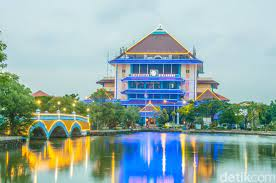

Universitas Airlangga (Unair)
Universitas Airlangga (Unair/UA)adalah sebuah perguruan tinggi negeri yang terletak di Surabaya, Jawa Timur. Universitas ini didirikan pada tanggal 10 November 1954 bertepatan dengan hari pahlawan yang ke-9.
Sejarah
Berdirinya Universitas Airlangga memiliki sejarah yang cukup panjang. Sebelum Unair resmi didirikan, pada tanggal 9 dan 11 Oktober 1847, disampaikan usul kepada Pemerintah Kolonial Belanda untuk mendidik pemuda-pemuda Jawa yang berbakat menjadi ahli-ahli praktik kesehatan. Pada tanggal 2 Januari 1849, melalui Keputusan Pemerintah No. 22, didirikan NIAS (Nederlandsch Indische Artsen School) sebagai tempat pendidikan dokter di Surabaya. Sejak tahun 1913, pendidikan dokter di Surabaya berlangsung di Jalan Kedungdoro 38 Surabaya. Pada tahun 1923, gedung NIAS dipindah dari Jalan Kedungdoro ke tempat berdirinya Fakultas Kedokteran Unair di Jalan Mayjen. Prof. Dr. Moestopo, Surabaya.
Kemudian Dr. Lonkhuizen, Kepala Dinas Kesehatan pada masa itu, mengajukan usulan untuk mendirikan Sekolah Kedokteran Gigi di Surabaya yang dirintis sejak bulan Juli 1928 hingga 1945. Ia mendapat persetujuan dari Dr. R.J.F. Van Zaben, Direktur NIAS. Berikutnya, sekolah tersebut lebih dikenal dengan nama STOVIT (School tot Opleiding van Indische Tandarsten). Kala itu, STOVIT berhasil mengumpulkan 21 orang siswa. Dalam perjalanannya, STOVIT berganti nama menjadi Ika Daigaku Shika (sekolah kedokteran dan kedokteran gigi) dengan Dr. Takeda sebagai direktur pertamanya, menjabat antara tahun 1942–1945.
Dua tahun kemudian, pemerintah Belanda mengambil alih dan kemudian mengganti namanya menjadi Tandheelkunding Instituut. Pada tahun 1948 sekolah ini berubah status menjadi Universiteit Tandheelkunding Instituut (UTI). Di bawah otoritas Republik Indonesia Serikat (RIS), UTI kembali berganti nama menjadi Lembaga Ilmu Kedokteran Gigi (LIKG) selama 4 tahun masa studi, di bawah pimpinan Prof. M. Knap dan Prof. M. Soetojo. Pada tahun 1948, Universitas Airlangga merupakan cabang dari Universitas Indonesia yang memiliki dua fakultas, yakni Fakultas Kedokteran dan Fakultas Kedokteran Gigi.
Universitas Airlangga secara resmi berdiri pada tahun 1954 berdasarkan Peraturan Pemerintah No. 57/1954 dan diresmikan oleh Presiden Republik Indonesia pada tanggal 10 November 1954, bertepatan dengan perayaan hari pahlawan yang kesembilan. Pada tahun yang sama pula berdiri Fakultas Hukum yang dulunya merupakan cabang dari Fakultas Hukum, Ekonomi, dan Sosial Politik Universitas Gadjah Mada, Yogyakarta.